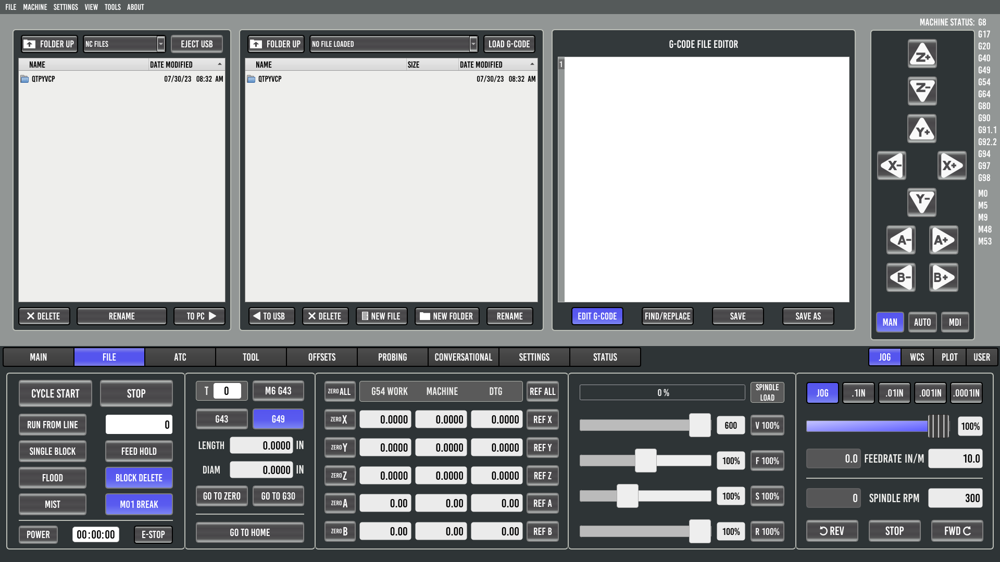
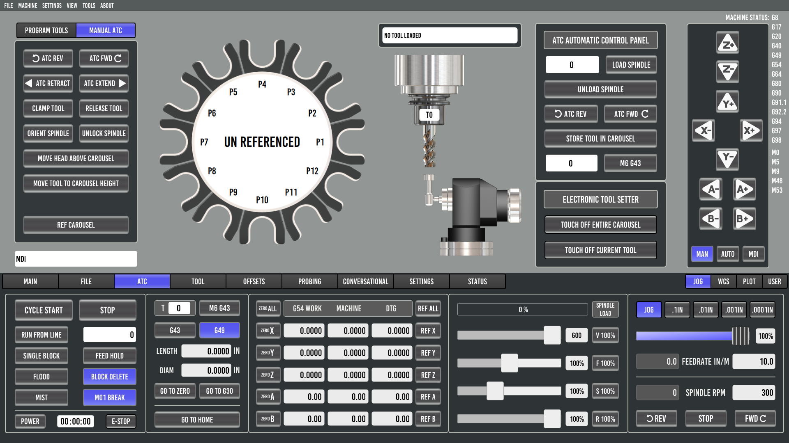
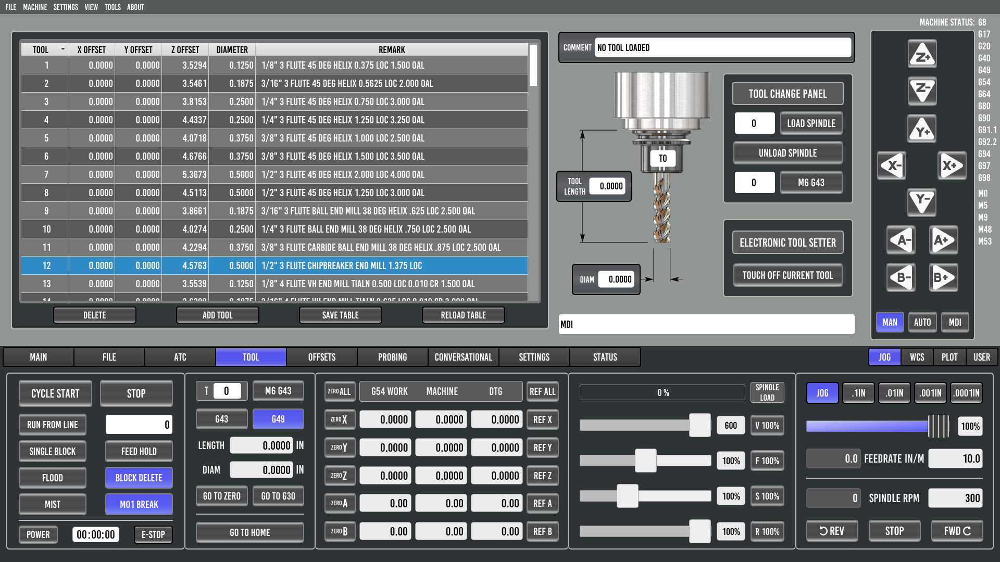
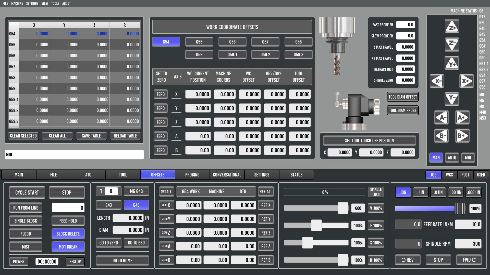
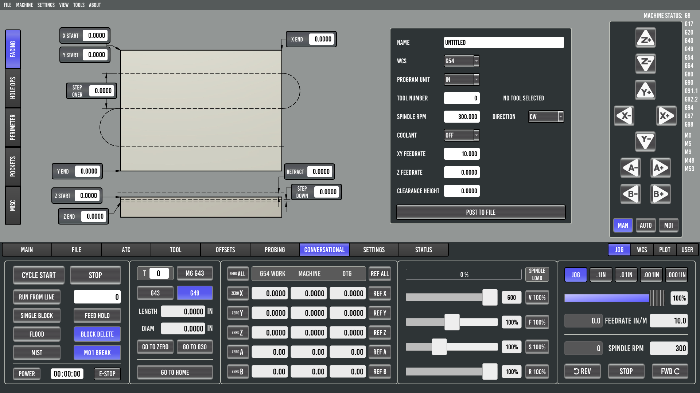
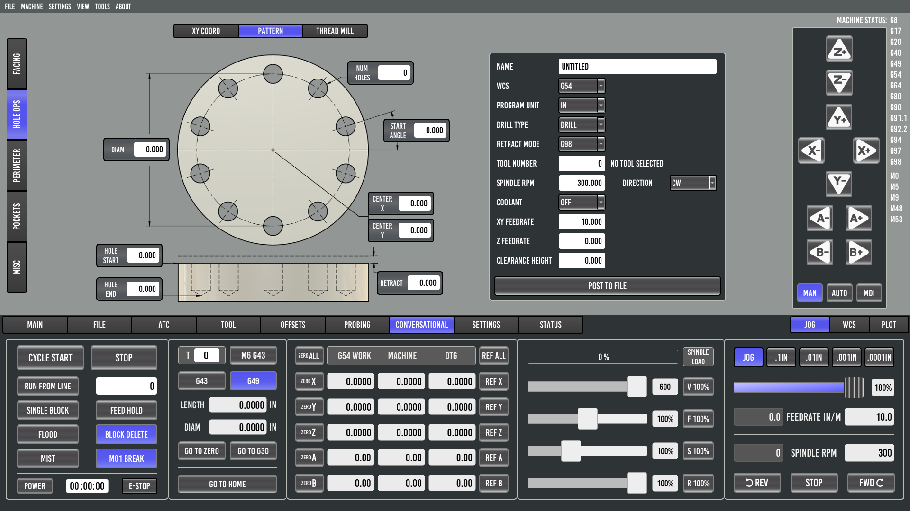
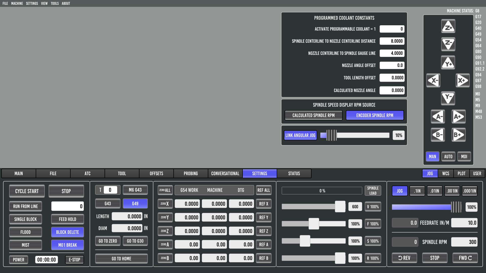

ProbeBasic
Installation:
Probe Basic APT Stable Install
Probe Basic APT Develop Install
Probe Basic Changing Stable <-> Develop Versions
Probe Basic deb Install
Probe Basic Development Installation
Update Release Notes:
Stable Update Release Notes
Develop Update Release Notes
Configuration:
Probe Basic Parameters
Machine Configuration (INI, HAL, Files)
Carousel ATC Setup
Interface:
Mill
Main
GCODE
MDI
File
ATC
Tool
Offsets
Probing
Conversational
Facing
Holes
Pattern
XY Coord
Settings
Status
Lathe
Lathe Tool Offsets
Probing
Tool Length Setter
Extending:
User Tabs
Customisation with Python
ProbeBasic
Probe Basic Mill Interface
View page source
Probe Basic Mill Interface
Main
GCODE
MDI
File

ATC

Tool

Offsets

Probing
Probing Help
Conversational
Facing

Holes
Pattern

XY Coord
Settings

Status